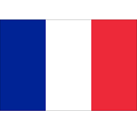

Tokyo, Japan

Tokyo, the capital of Japan, is a bustling metropolis known for its vibrant culture, rich history, and cutting-edge technology.
- Province/State: Tokyo
- Country: Japan
- Population: 13,979,745
- Latitude & longitude: 35.6895° N, 139.7670° E
- Flag of the country:
Back to homepage
New York City, USA

The city that never sleeps, New York City is a global hub for finance, media, art, and culture.
- Province/State: New York
- Country: USA
- Population: 8,420,527
- Latitude & longitude: 40.7128° N, 74.0060° W
- Flag of the country:

Back to homepage
Paris, France
The City of Light, Paris is famous for its stunning architecture, art museums, and romantic atmosphere.
- Province/State: Île-de-France
- Country: France
- Population: 2,161,000
- Latitude & longitude: 48.8567° N, 2.2943° E
- Flag of the country: 
Back to homepage